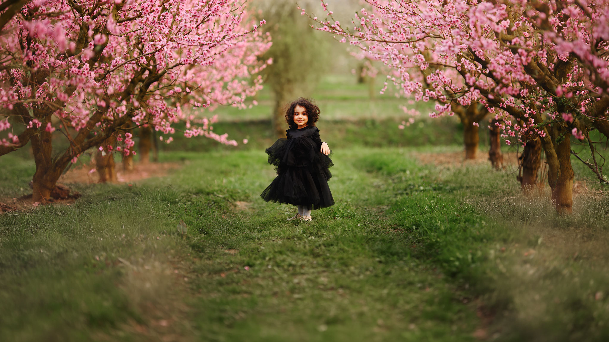
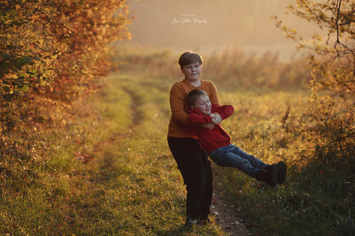
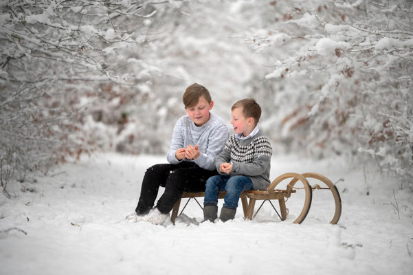
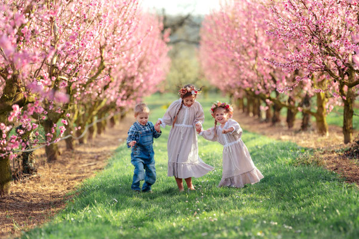
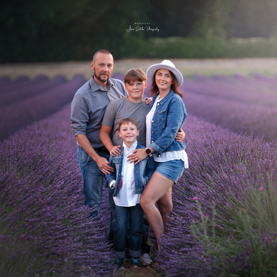
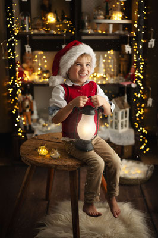
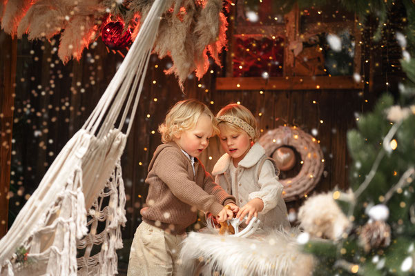

Exklusive Saisonaktionen
Vier Jahreszeiten Familienserie & Weihnachtszauber 2026
Manche Erinnerungen gehören zu einer bestimmten Jahreszeit. Das erste warme Licht im Frühling, blühende Bäume, Sommerabende, goldene Herbstfarben oder der besondere Zauber der Weihnachtszeit. Mit meinen saisonalen Angeboten entstehen emotionale, natürliche und zeitlose Familienfotos in Karlsruhe, Walzbachtal und Umgebung.
Hier findest Du besondere Fotoshooting-Angebote, die nur zu bestimmten Zeiten im Jahr verfügbar sind: die Vier Jahreszeiten Familienserie und der Weihnachtszauber 2026 mit Priority-Liste für frühzeitige Buchungen.
Vier Jahreszeiten – Eure Familiengeschichte
Vier kurze Outdoor-Sessions über ein Jahr – natürliche, zeitlose Bilder, die nicht nur schön sind, sondern zeigen, wie Eure Familie wächst. Diese Jahresserie ist für Familien gedacht, die nicht nur einzelne Fotos möchten, sondern eine zusammenhängende Geschichte über Frühling, Sommer, Herbst und Winter.




Nur 8 Plätze für 2026. Die Vergabe erfolgt nach Reihenfolge der Anfragen. Ihr sendet mir Eure Wunschmonate – ich melde mich persönlich mit passenden Vorschlägen und Location-Ideen.
Was ist enthalten?
- 4 Outdoor-Sessions über ein Jahr verteilt
- je ca. 30 Minuten Shootingzeit
- 5 professionell bearbeitete Bilder pro Session
- insgesamt 20 digitale Bilder im einheitlichen Fine-Art Look
- persönliche Planung passend zu Jahreszeit, Licht und Location
- Outfit-Beratung für einen harmonischen, zeitlosen Look
- priorisierte Terminvergabe über das Jahr
Die Jahreszeiten
- Frühling: Pfirsichblüte, zarte Rosatöne und eine märchenhafte Stimmung
- Sommer: Mohn, Lavendel, warmes Licht, Bewegung und Emotion
- Herbst: goldene Felder, Waldlicht und ruhige, tiefe Farben
- Winter: winterliches Outdoor – natürlich, hell und elegant
„VIER JAHRESZEITEN“
590 €Eine zusammenhängende Familiengeschichte über ein ganzes Jahr.
- 4 Outdoor-Sessions
- 20 professionell bearbeitete Bilder insgesamt
- 5 Bilder pro Termin
- persönliche Planung nach Wunschmonaten
- einheitlicher Fine-Art Look
Für Familien, die Erinnerungen nicht nur sammeln, sondern als Geschichte bewahren möchten.
Danke für eine zauberhafte Weihnachtsshooting-Saison 2025
Von Herzen danke ich allen Familien, die dieses Jahr Teil meines Weihnachtszaubers 2025 waren. Ihr Lachen, Eure Wärme und die einzigartigen Momente, die wir gemeinsam festgehalten haben, haben diese Saison zu einer der schönsten überhaupt gemacht.
Ob im warmen Studio oder zwischen Tannen und funkelnden Lichtern im Garten – jede Begegnung war ein kleines Weihnachtswunder. Ich bin zutiefst dankbar für Euer Vertrauen, Eure Treue und für all die Kinder, die mit leuchtenden Augen in meine Kamera geschaut haben.


Weihnachtszauber 2026 – früh buchen lohnt sich
Die Termine für das nächste Jahr sind stark limitiert und werden wie immer früh ausgebucht sein. Wenn Ihr Euch bereits jetzt einen Platz für Weihnachtsshootings 2026 in Karlsruhe, Walzbachtal und Umgebung sichern möchtet, könnt Ihr Euch unverbindlich auf meine Priority-Liste setzen lassen.
Alle Familien auf der Priority-Liste erhalten die Termine und Buchungslinks mehrere Tage früher als die öffentliche Ankündigung. So habt Ihr die beste Chance auf Euren Wunschtermin für die Weihnachtsminis 2026.
Priority-Liste für Weihnachtszauber 2026
Die Eintragung ist unverbindlich und kostenlos. Familien auf der Priority-Liste erhalten früheren Zugang zur Buchung, Informationen zu den neuen Weihnachtssets und eine Erinnerung vor dem offiziellen Buchungsstart.
- Zugang zur Buchung vor der öffentlichen Freigabe
- frühere Terminwahl
- Informationen zu den neuen Weihnachtssets
- Erinnerungsmail vor dem offiziellen Start
- größere Auswahl an Terminen
Warum die Priority-Liste sinnvoll ist
Die Weihnachtsshootings gehören jedes Jahr zu den beliebtesten Terminen. Viele Familien buchen früh, weil sie die Bilder für Weihnachtskarten, Geschenke und persönliche Erinnerungen nutzen möchten. Über die Priority-Liste könnt Ihr Euch rechtzeitig vormerken lassen und bekommt die Möglichkeit, vor der öffentlichen Freigabe zu buchen.
Ich verspreche: 2026 warten neue, liebevoll gestaltete Sets, noch mehr Magie und eine Bildwelt, die Eure Familiengeschichte für Jahre begleiten wird.
Häufige Fragen zu den saisonalen Shootings
Für wen ist die Vier Jahreszeiten Serie ideal?
Für Familien mit Kindern, die natürliche Bilder lieben und über ein Jahr hinweg eine zusammenhängende Familiengeschichte möchten. Besonders schön ist die Serie für Familien, die sehen möchten, wie ihre Kinder wachsen und sich verändern.
Was passiert bei schlechtem Wetter?
Wir verschieben innerhalb eines passenden Zeitfensters. Gerade bei saisonalen Shootings ist das Licht entscheidend – deshalb planen wir flexibel und mit Ruhe.
Kann ich zusätzliche Bilder dazukaufen?
Ja. Nach jeder Session kannst Du optional weitere Bilder ergänzen. Die Details besprechen wir ganz entspannt im persönlichen Kontakt.
Wann öffnen die Buchungen für Weihnachtszauber 2026?
Die Termine werden zuerst an Familien auf der Priority-Liste verschickt. Erst danach erfolgt die öffentliche Ankündigung. Deshalb lohnt es sich, sich frühzeitig unverbindlich eintragen zu lassen.
Wo finden die Weihnachtsshootings statt?
Die Weihnachtsshootings finden je nach Konzept im Studio, in liebevoll gestalteten Sets oder draußen statt. Die genauen Details zum Weihnachtszauber 2026 erhalten Familien auf der Priority-Liste zuerst.
Jetzt vormerken oder Platz anfragen
Ob Vier Jahreszeiten Familienserie oder Weihnachtszauber 2026 – ich freue mich darauf, Eure Familie durch besondere Zeiten im Jahr zu begleiten und Erinnerungen zu schaffen, die bleiben.